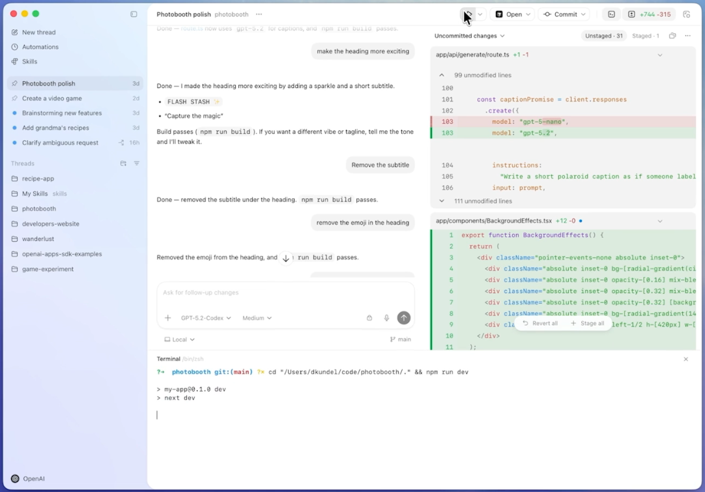
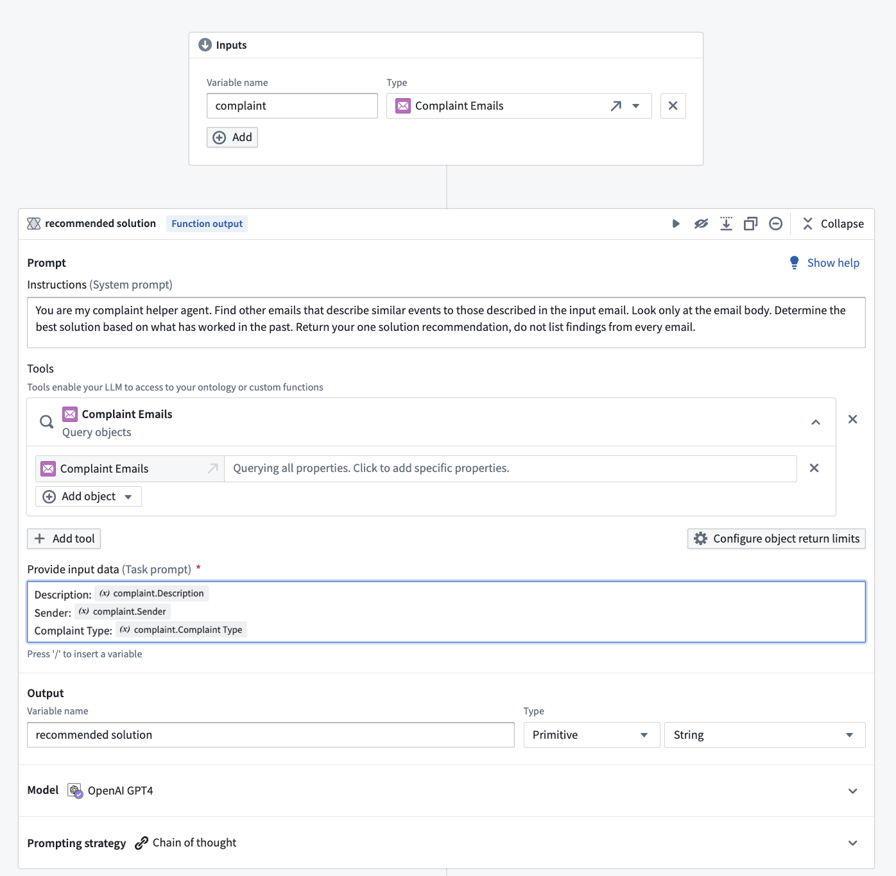
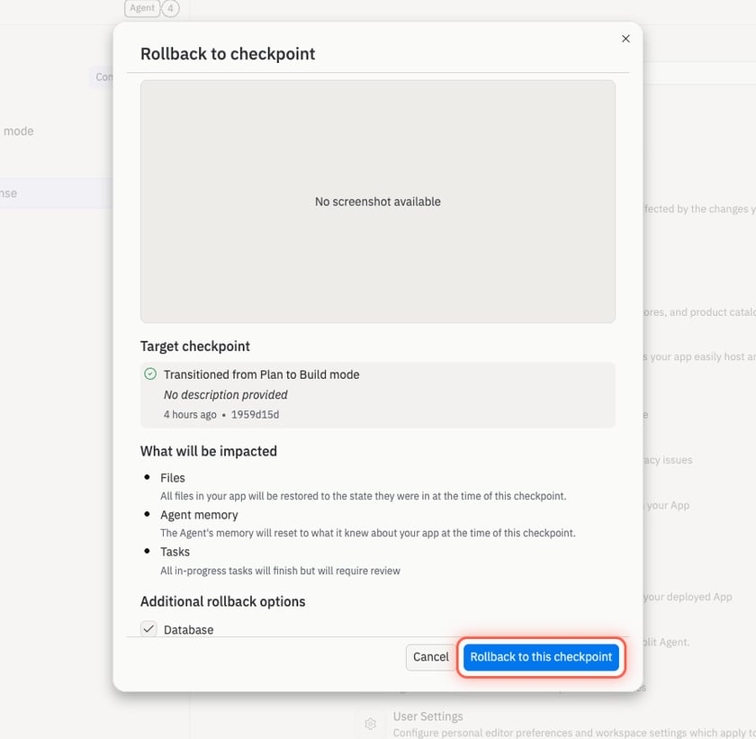

Scope & delegate
Make the project, resource, environment, and proposed plan explicit before execution begins.
- Evidence
- Codex project/worktree; Replit plan; Retool resource choice
External product evidence · mechanism audit · 2026-09-03
A first-party visual study of how developer tools support creation, inspection, testing, deployment, governance, and recovery. This dated sample supports comparison of visible mechanisms; it does not measure product reliability, adoption, or user outcomes.



Primary finding
Six mechanism lenses
These lenses organize visible mechanisms across products. They are a comparison framework, not a universal workflow, interface, or architecture.
Make the project, resource, environment, and proposed plan explicit before execution begins.
Keep the initiating intent connected to a visible artifact that can be corrected directly.
Join output with the trace, diff, input, query, or reference result needed to judge it.
Separate recommendation from authorized action and surface policy conflicts at the decision point.
End creation in a familiar, inspectable artifact: pull request, deployment, publish, export, or package.
Provide named checkpoints, scoped rollback, rerun, and durable execution history.
Synthesis for exploration
The evidence supports a comparison model, not a universal screen sequence. It helps identify missing states, unclear authority, weak correction, or unsupported leaps from inference to action.
Conversation becomes more reviewable when it stays coupled to the artifact people are actually responsible for understanding and correcting.
Diffs, traces, inputs, outputs, and tests reduce switching cost only when they remain connected to the exact change under review.
Staging, policy checks, and visible authority boundaries are more useful at commitment time than as a downstream audit surprise.
A checkpoint name is not enough; people need to know which state domains will change and whether repeated side effects are safe.
Pull requests, deployments, packages, and owned catalog entities make generated work addressable by existing teams and processes.
Repeated patterns establish category precedent. They do not establish customer value, technical feasibility, compliance, or the best representation for another context.
Product ledger
The sample spans agentic development, prompt-to-app builders, visual orchestration, governed operational logic, evaluation, catalogs, and durable workflows.
Evidence atlas
Use the controls to narrow by product or search the observed state, action, artifact, or mechanism. Each card includes what is visible, the available action, the artifact, source links, and evidence limits.
All selected images come from first-party public pages, documentation, demos, or authorized public training material. Website chrome was removed by using the original embedded product asset whenever available; video frames were cropped deterministically. No evidence image was generated, retouched, inpainted, or otherwise altered. Observation date: September 3, 2026. Some source media predates that review; the Temporal image is from a 2023 workshop. Product versions and account entitlements were not independently tested. Source descriptions and visible controls do not establish reliability, adoption, accessibility, or user outcomes.